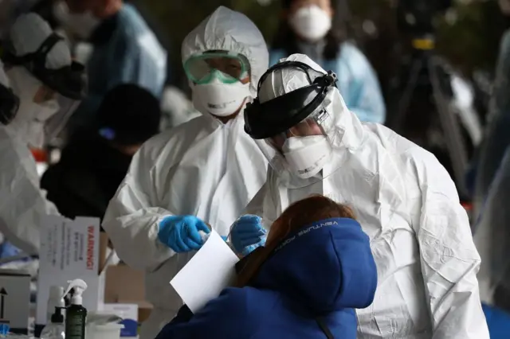
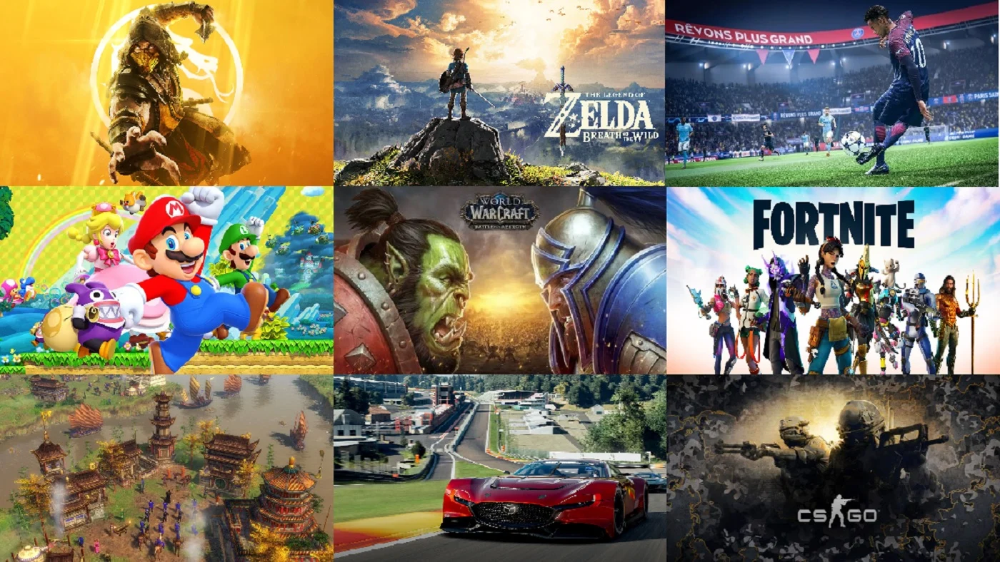
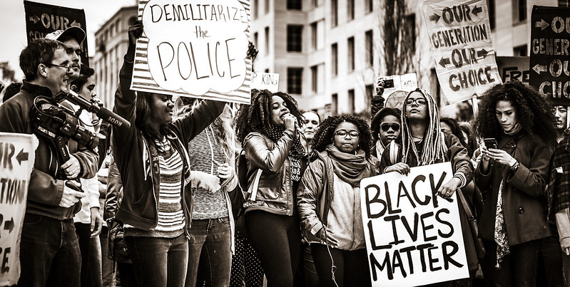

📋 Resumo
O que antes era um espaço cotidiano e amplamente difundido torna-se, de forma abrupta, a espinha dorsal da vida moderna. A pandemia da COVID-19, iniciada no final de 2019 e declarada oficialmente pela OMS em março de 2020, transforma completamente a relação da humanidade com o digital. De um dia para o outro, bilhões de pessoas foram obrigadas a transferir para a internet suas rotinas mais básicas — trabalho, educação, saúde, cultura, lazer e até interações familiares.
📚 Detalhes
A internet deixa de ser um complemento e se torna uma necessidade vital, comparável à energia elétrica, água potável e infraestrutura de transporte. Para historiadores, 2020 inaugura a era da hiperconectividade global forçada, um experimento social e tecnológico que acelerou em uma única década avanços que normalmente levariam quinze ou vinte anos.
Com a imposição de quarentenas, lockdowns e medidas sanitárias globais, escolas, universidades, empresas e governos foram obrigados a reinventar seus sistemas em poucos dias. Milhões de professores migraram para plataformas como Google Classroom, Microsoft Teams e Zoom, que se tornou o símbolo da educação remota. Nunca antes na história tantas crianças e adolescentes estudaram simultaneamente à distância.

O home office — antes restrito a setores específicos — se tornou padrão global. Empresas inteiras mudaram para o virtual em semanas. Ferramentas como Zoom (cujo crescimento foi de mais de 300% em meses), Slack, Discord e Google Meet se tornaram essenciais. Esse processo gerou debates profundos sobre produtividade, saúde mental, privacidade, vigilância corporativa e direitos trabalhistas em ambientes digitais. 2020 mostrou, de forma dramática, que o trabalho do futuro seria híbrido, remoto ou totalmente descentralizado.
Ao mesmo tempo, a telemedicina — antes tratada com cautela — tornou-se indispensável. Consultas virtuais, diagnósticos a distância e sistemas de monitoramento digital salvaram vidas durante a crise, fazendo com que países acelerassem legislações para permitir atendimento remoto.
A internet tornou-se também o principal canal de informação sobre a pandemia, mas igualmente o principal vetor de desinformação, com teorias conspiratórias, fake news e negacionismo científico circulando globalmente em velocidade alarmante. A OMS, inclusive, usou pela primeira vez o termo “infodemia” para descrever a avalanche de informações falsas que ameaçava tanto quanto o próprio vírus.

Com cinemas fechados, shows cancelados e eventos presenciais suspensos, o entretenimento migrou totalmente para o digital. A Netflix bate recordes históricos de audiência. Plataformas como Disney+ e HBO Max aceleram sua expansão global. O streaming se torna a principal forma de consumo cultural no mundo.
Paralelamente, os videogames vivem um crescimento sem precedentes. Jogos como Animal Crossing: New Horizons, Among Us, Fortnite e Minecraft tornam-se fenômenos sociais que ajudam pessoas a manter vínculos durante o isolamento. Eventos globais que antes eram realizados presencialmente passam a ocorrer dentro de mundos virtuais: shows inteiros dentro de Fortnite, desfiles de moda em Animal Crossing, casamentos e festas em servidores de Minecraft. Pela primeira vez, a realidade virtual e os mundos digitais começam a substituir experiências sociais reais de forma ampla.

As lives também explodem. No Brasil, apresentações de artistas como Marília Mendonça, Gusttavo Lima e sertanejos tornam-se alguns dos eventos mais assistidos da história do YouTube. As lives redefinem o showbusiness, aproximam fãs de artistas de forma inédita e estabelecem novos modelos de monetização.
Em 2020, as redes sociais assumem um papel crítico na comunicação de governos, instituições científicas e populações inteiras. No entanto, também se tornam terreno fértil para polarização, conflitos ideológicos e disputas narrativas sobre máscaras, vacinas, medidas sanitárias e responsabilidade política.
Movimentos globais como Black Lives Matter impulsionam debates sobre racismo, violência policial, desigualdade e representatividade. Hashtags, vídeos e transmissões ao vivo colocam nas mãos da população comum um poder midiático antes restrito à imprensa tradicional.

YouTube, Twitter, TikTok, Instagram e Facebook tornam-se protagonistas na formação da opinião pública. TikTok, em especial, explode globalmente, tornando-se a plataforma de crescimento mais rápido do mundo. A estética do vídeo curto redefine a produção cultural, dando origem a milhares de criadores e a um novo formato de comunicação digital. Com a migração para o digital, cresce a preocupação com privacidade, coleta de dados e vigilância. Aplicativos de rastreamento de contatos epidemiológicos, como os desenvolvidos por Google e Apple, geram debates intensos sobre limites éticos e democráticos da tecnologia. Governos começam a monitorar movimentações populacionais para análise de contágio, levantando questões sobre o futuro da liberdade digital.
As Big Tech — Google, Facebook, Amazon, Apple e Microsoft — atingem níveis de poder nunca vistos. Durante a pandemia, suas receitas e influência crescem de forma exponencial, levando países a iniciarem investigações antitruste, debates legislativos e propostas de regulação.
Outro aspecto crucial de 2020 é a revelação brutal das desigualdades de acesso à internet. Milhões de estudantes ficaram sem aulas por não possuírem conexão adequada, computadores ou celulares. A exclusão digital, antes invisível, torna-se questão de saúde pública, educação e infraestrutura. Organizações internacionais como a UNESCO e a ONU lançam relatórios denunciando o impacto devastador das desigualdades tecnológicas durante a pandemia.
A hiperconectividade forçada altera profundamente a saúde mental das pessoas. A sobrecarga de telas, reuniões online, isolamento e ansiedade criam novos problemas sociais. Fala-se de “fadiga do Zoom”, burnout digital e dependência de dispositivos. A internet, que salva, também esgota.
Ao mesmo tempo, novas formas de proximidade surgem: encontros virtuais, festas online, celebrações por vídeo e o fortalecimento de comunidades digitais. O ano evidencia que a internet não é apenas tecnologia — é espaço emocional e afetivo.
The Social Dilemma (2020)
Streaming: https://www.netflix.com/br/title/81254224
.
Coronavirus, Explained (2020)
Streaming: https://www.netflix.com/pt/title/81273378
.
Pandemia: Como Prevenir uma Epidemia (2020)
Streaming: https://www.netflix.com/pt/title/81026143
.🔗 Fontes de Pesquisa